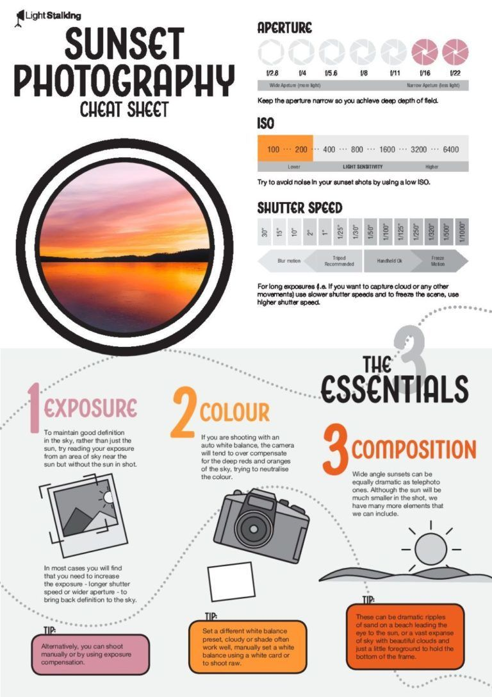
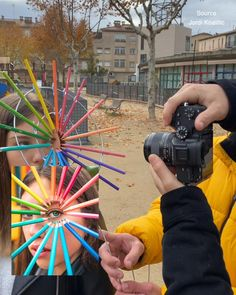
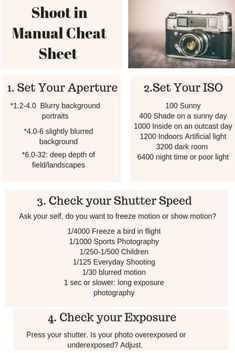

ELITE STUDIOS
"Photography is an art of observation. It has little to do with the things you see, and everything to do with the way you see them.” – Elliot Erwitt
Pictures play a key role in significantly increasing the intensity of expressions,
and if you wish to become a professional photographer, then you must be well-familiar
with all the vital aspects of this craft.
If you are looking forward to pursuing a photography course in Delhi NCR, then our School of Photography can be your one-stop solution. We are considered amongst top photography schools offering industry-relevant exposure through our diploma, certification, bachelors, and masters in photography programs.



Elite Studios offers long-term job-oriented
as well as short term courses in 2D Animation,
3D Animation, Graphic Designing, VFX, Film Making,
Web Designing, Web Development, e-Learning, Mobile Gaming
and Digital Marketing.
Start your Blockbuster career at Elite Studios!
Advanced Certificate in Digital Marketing and Communication!
Become a Digital Marketing expert by specialising in Social Media and Content Marketing, Branding,
Marketing Analytics and Public Relations. Start your Digital Marketing journey.
| 11000+ | 2 Tracks | 32-50 Weeks | Sep 15, 2022 | 300+ |
|---|---|---|---|---|
| Learners | Outcome Oriented Curriculum | Recommended 7-9 hrs/week | Start Date | Hiring Partners |